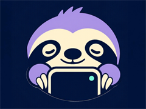
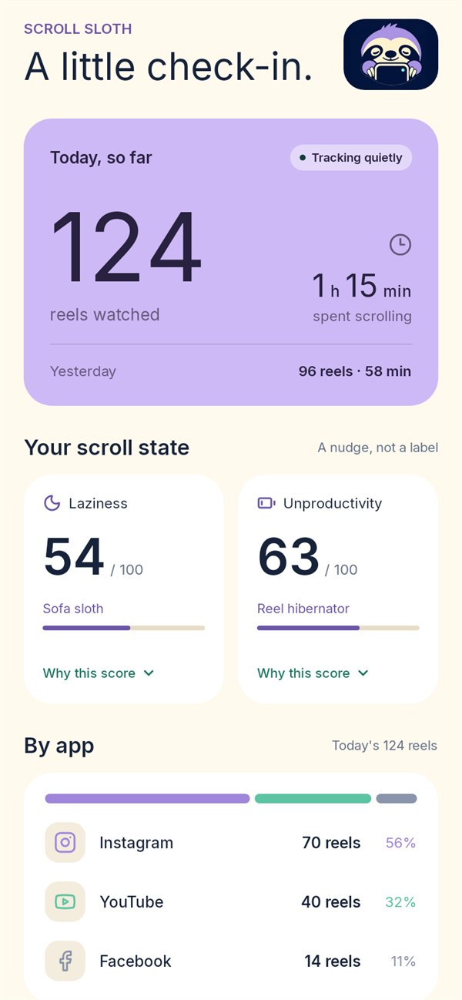
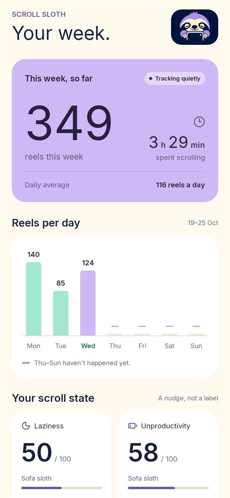
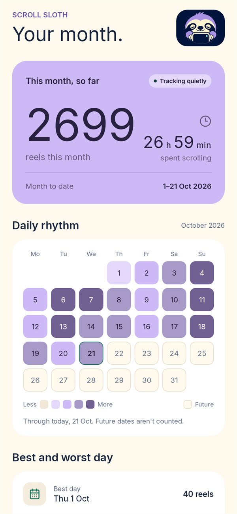

Scroll Sloth

Count the reels you actually watch.
Scroll Sloth counts the reels you watch in Instagram, YouTube Shorts and Facebook Reels, then tells you, gently or not, how slothful your day was. Everything stays on your phone.
Android 8.0 or newer. Free and open source.
- No account
- No server
- No analytics
- Works offline
A calm look at your day



Example data. Light or dark follows your phone, or pick one in Settings.
What it does
Counts real views
A reel counts once you have watched it for 2 seconds and moved on. Fast flicks don't count, scrolling back doesn't count twice, and loops are capped.
Day, week, month
Reels and minutes per day, a week chart, a month heat map, best and worst days, and late-night scrolling.
Laziness score
Two scores from 0 to 100, each with a "why this score" breakdown. Plain arithmetic, no guessing.
A nightly verdict
A two-sentence comment, gentle or roast, written by a small Gemma model on your phone, or by templates if you skip the download.
- Fully awake
- Casual scroller
- Sofa sloth
- Reel hibernator
- Fossilised
Privacy
On your phone. Only your phone.
No account, no server, and no analytics or crash-reporting code.
For each reel it stores three things: when it started, which app it was in, and how long it stayed on screen. It never stores captions, usernames, links, screen text or anything about what the reel was.
The accessibility service is limited by Android to exactly three apps: Instagram, YouTube and Facebook. It cannot see any other app. The app makes only two kinds of network request, and neither sends anything about you:
- an optional one-time download of the on-device language model, and
- a weekly update using two small HTTPS GETs of public files: the detection rules and their detached signature. Official rules must pass signature verification before use; imported and custom rules are labelled Unverified and require confirmation.
Your data never leaves the phone unless you export it yourself. Delete all data in Settings removes it.
Install
- On your phone, open the latest release and download
scroll-sloth-v….apk. Each release lists the file's SHA-256 checksum if you want to check it. - Open the downloaded file. If Android asks, allow your browser or Files app to install unknown apps, then tap Install.
- Open Scroll Sloth. The welcome screen explains what is counted and what isn't.
- In Scroll Sloth, tap Open accessibility settings.
- Find Scroll Sloth under Installed apps or Downloaded apps, open it, switch the service on, and accept Android's prompt.
- Go back to Scroll Sloth. Settings shows each app as Working. Then just watch reels as usual.
Android 13 and newer: allow restricted settings first
Android blocks accessibility access for apps installed outside the Play Store until you allow it. Open Settings › Apps › Scroll Sloth (App info), tap the ⋮ menu in the top corner, choose Allow restricted settings, and confirm with your PIN or fingerprint. If the option isn't there yet, first try step 4 once; Android only offers it after the service has been blocked.
The optional on-device writer (about 1.9 GB, Wi-Fi only by default) is under Settings › On-device writer.
Good to know
- Android only. There is no iPhone version, because iOS doesn't let apps observe other apps this way.
- Detection reads the layout of Instagram, YouTube and Facebook. When one of them redesigns its reel screen, counting for that app can stop until the rules are updated. Settings will say so.
- Counts are close, not perfect. Settings › Advanced › Calibration lets you compare the detector with your own count.